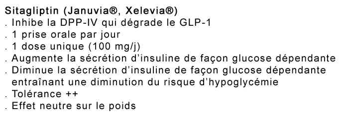

Bienvenue Sur Medical Education
Diabétique aux urgences
Spécialité : endocrinologie / métabolisme /
Points importants
-
Le diabète est défini par :
- glycémie ≥ 2 g/L (11 mmol/L) à n'importe quel moment de la journée
- glycémie à jeun ≥ 1,26 g/L (7,0 mmol/L) à deux reprises
- glycémie 2 heures après charge orale de 75g de glucose ≥ 2g/L (11mmol/L)
-
Les 2 principales formes sont :
- diabète de type 1 (10%): ex DID
- diabète de type 2 (85%): ex DNID
- C'est une maladie à forte prévalence 5 à 6% de la population générale, 20 à 30% des patients hospitalisés
Présentation clinique / CIMU
SIGNES FONCTIONNELS
Généraux
- Fatigue
- Somnolence
Spécifiques
- Augmentation du volume des urines (polyurie)
- Soif intense (polydipsie)
- Faim exagérée (polyphagie)
- Amaigrissement
- Douleur abdominale
CONTEXTE
Pour le diabète de type 1
-
Terrain :
- sujet jeune
- sans surpoids
- dans 30% des cas après l'âge de 30 ans
-
Traitement usuel :
- insuline
-
Antécédents :
- sans ATCD familiaux de diabète
-
Facteurs de risque :
- maladies auto-immunes associées
- Circonstances de survenue brutale (acidocétose)
Pour le diabète de type 2
-
Terrain :
- sujet 40 - 50 ans
- en surpoids obésité abdominale (périmètre abdominal > 102 cm chez l'homme et 88 cm chez la femme) ou obésité (IMC > 30 kg/m²)
-
Traitement usuel :
- anti diabétique oraux
-
Antécédents :
- ATCD familiaux de diabète un facteur héréditaire est très souvent retrouvé
-
Facteurs de risque cardio-vasculaires :
-
ATCD familiaux d'accident cardio-vasculaire précoce :
- IDM ou mort subite avant 55 ans, avant 65 ans chez la mère et/ou ATCD familiaux d'AVC constitué précoce (< 45 ans)
- tabagisme (tabagisme actuel, ou arrêté depuis moins de 3 ans)
- HTA permanente, traitée ou non
- HDL-cholestérol < 0,4 g/L quel que soit le sexe
- LDL-cholestérol > 1,60 g/L (4,1 mmol/L)
- micro albuminurie > 30 mg/24 h
-
ATCD familiaux d'accident cardio-vasculaire précoce :
-
Autres facteurs à prendre en compte :
- La sédentarité
-
Certains médicaments comme :
- les corticoïdes (sous toutes les formes)
- béta-bloquants non cardiosélectif
- diurétiques hypokaliémiants
- progestatifs de synthèse de type norstéroïdes
- sympathicomimétiques (Salbutamol)
- antiprotéases (traitement du SIDA)
-
Circonstances de survenue :
- évolution lente
Diagnostic soit par
- Découverte fortuite
- Dépistage systématique
-
Complications du diabète :
- macroangiopathie +++
- microangiopathie ++
-
Complications métaboliques :
- coma hyperosmolaire (diabète méconnu du sujet âgé)
- hypoglycémie (sous sulfamides)
- acidocétose (infection)
EXAMEN CLINIQUE
- Le contraste entre l'intensité des signes généraux et fonctionnels et la pauvreté des signes physiques est évocateur du diagnostic
EXAMENS PARACLINIQUES SIMPLES
- Glycémie capillaire > 2 g/L
- Cétonémie
- BU : glycosurie, cétonurie
- ECG : recherche de signes de dyskaliémie
CIMU
- Tri 2 à 4 en fonction de la gravité clinique
Signes paracliniques
BIOLOGIQUE
- Ionogramme sanguin pour toute glycémie > 11 mmol/L chez un diabétique (à la recherche d'une RA basse, d'une insuffisance rénale, dyskaliémie)
- Puis le bilan sera adapté en fonction des signes cliniques de cétose, d'acidose, de déshydratation globale
-
Recherche une cause de décompensation :
- NFS
- bilan hépatique
- ECBU
- ± PL
IMAGERIE
- Radio pulmonaire si signes en faveur d'une pneumopathie
Diagnostic étiologique
- Diabète de type 1
- Diabète de type 2
 _42
Tableau
Caractéristiques comparatives des diabètes de type 1 et 2
_42
Tableau
Caractéristiques comparatives des diabètes de type 1 et 2
- Diabètes iatrogènes
-
Pancréatite chronique calcifiante : associe au déficit endocrine
- une insuffisance pancréatique externe avec stéatorrhée
- et parfois malabsorption
-
Hémochromatose :
- le dosage du fer sérique et du coefficient de saturation de la transferrine permet le diagnostic confirmé par la mise en évidence de la mutation HFE
-
Diabètes endocriniens : Ils sont associés
- à l'hyperthyroïdie
- au phéochromocytome
- au syndrome de Cushing
- à l'acromégalie
- à la maladie de Conn
- au glucagonome
- au somatostatinome
- Cancer du pancréas
-
Diabète de type 3 :
- doit être suspecté chez les africains et les indiens
- apparaît entre 30 et 40 ans
- début aigu, généralement avec cétose
- évolution se faisant secondairement vers un mode non insulinodépendant
-
Diabète MODY (Maturity Onset Diabetes of the Young) :
- diabète d'hérédité autosomale dominante
- non insulinodépendant
- survient avant l'âge de 25 ans
- réalise une hyperglycémie bénigne familiale due à une mutation de la glucokinase
-
Diabète secondaire à une mutation de l'acide désoxyribonucléique mitochondrial :
- associe une surdité de perception
- hérédité maternelle
-
Diabète lipoatrophique :
- congénital ou acquis
- caractérisé par la disparition du tissu adipeux
- insulino-résistance majeure avec hyperlipidémie et stéatose hépatique
Diagnostic différentiel
- Diabète gestationnel
Traitement
DIABETIQUE DE TYPE 1 CONNU
Cétonémie (CC) = 0,5 mmol/L
-
+ Glycémie capillaire = 11 mmol/L :
- boisson abondante
- augmenter l'insuline de base de 2UI en SC
- analogue rapide (2 - 4 UI) en SC (1UI diminue la glycémie de 0,5 g/L)
-
surveillance glycémie capillaire et cétonémie à H2 si glycémie >11 mmol/L :
- refaire 2-4 U d'analogue rapide surveillance 2h et refaire glycémie capillaire si glycémie < 11 mmol/L
-
faire sortir avec :
- recommandations
- 3 à 4 glycémie capillaire /j, cétonurie/cétonémie/j
- consultation diabétologie ou médecin traitant rapide
 _43
Tableau
Recommandations pour les patients diabétiques
_43
Tableau
Recommandations pour les patients diabétiques
-
+ Glycémie capillaire = 20 mmol/L :
- boisson abondante
- augmenter l'insuline de base de 4UI en SC
- augmenter Analogue rapid : 6-8 UI SC
- surveillance glycémie à H2 et refaire Novorapid 4-6UI SC à H2 et H4 si besoin
-
sortie :
- si glycémie < 11 mmol/L
- majoration du traitement et surveillance
- lettre médecin traitant
Cétonémie 0,6-1,5 mmol/L+ glycémie > 11 mmol/L
Cétonémie 1,5-3 mmol/L + glycémie >11 mmol/L
Cétonémie > 3 mmol/L +glycémie > 11 mmol/L
DIABETIQUE DE TYPE 1 NON CONNU
DIABETE DE TYPE 2 CONNU
Cétonémie = 0,5 mmol/L
-
Glycémie capillaire = 11 mmol/L :
- boisson abondante
- majoration ADO si possible
-
ordonnance de sortie :
- avec glycémie veineuse, bilan hépatique, HbA1c, urée créatinémie
- et consultation médecin traitant (lettre)
-
Glycémie capillaire = 20 mmol/L :
- boisson abondante
- majoration ADO
- si traitement ADO max, introduire insuline retard 0.3UI /kg /j + bolus insuline rapide, en fonction de glycémie capillaire, 2-4UI en SC
- surveiller au bout de 2h la glycémie
-
ordonnance
-
 _44
Tableau
Ordonnance pour le matériel d'insuline d'autosurveillance
_44
Tableau
Ordonnance pour le matériel d'insuline d'autosurveillance
-
-
ordonnance pour infirmier
-
 _45
Tableau
Ordonnance pour l'infirmier à domicile
_45
Tableau
Ordonnance pour l'infirmier à domicile
-
- contrôle glycémie capillaire x3/j et cétonurie /j
-
diabétologue < 48 h avec bilan en externe
- _46 Tableau Bilan de surveillance biologique patient diabétique de type 2
Cétonémie 0,6-1,5 mmol/L + glycémie > 11 mmol/L
- Voir cétose sans acidose
Cétonémie 1,5-3 mmol/L + glycémie > 11 mmol/L
- Voir cétose sans acidose
Cétonémie > 3 mmol/L + glycémie >11 mmol/L
- Voir acidocétose diabétique
DIABETE DE TYPE 2 NON CONNU
- Voir Hyperglycémie
MEDICAMENTS
Insulines rapides
- Umuline rapide® ou Insuman rapide®, ou Actrapid ®
Les analogues rapides
- Apidra®, et NovoRapid®, Humalog®
Les insulines retard
- Les insulines à durée intermédiaire : NPH ®
- Les analogues lents : Lantus®, et Levemir®
Antidiabétiques oraux : ADO
_47 Tableau Quelle place pour chaque molécule dans la stratégie actuelle ?
Sulfamides hypoglycémiants
 _26
Tableau
Sulfamides hypoglycémiants
_26
Tableau
Sulfamides hypoglycémiants
- Daonil® Cp 5mg
- Hémi-Daonil® Cp 2,5 mg
- Daonil faible® Cp 1,5 mg
- Amarel® Cp 1, 2, 3, 4 mg
- Diamicron® Cp 80 mg
Biguanides
 _49
Tableau
Biguanides
_49
Tableau
Biguanides
- Stagid® 700 mg
- Glucophage® (metformine) 500 ou 850 mg ou 1000mg
Inhibiteurs des alpha-glucosidases
 _50
Tableau
Inhibiteurs des alpha-glucosidases
_50
Tableau
Inhibiteurs des alpha-glucosidases
- Glucor® 50 mg ou 100 mg
- Diastabol® 50 mg ou 100 mg
Glytazones : Actos®, Avandia®
Glinides : Novonorm®
Incrétino-mimétiques
- Inhibiteurs de la DPP4 : Januvia®
 _51 Tableau Inhibiteurs de la DPP-4
- Analogues du GLP1 (glitizine) : Byetta®
 _52
Tableau
Analogues du GLP1
_52
Tableau
Analogues du GLP1
Surveillance
- Voir dans Traitement
Devenir / orientation
- Voir dans Traitement
Mécanisme / description
Diabète de type 1
- Déficit complet de l'insulino-sécrétion
- Lié à la destruction des cellules ß des îlots de Langherans du pancréas par un processus auto-immun
- Sur un terrain génétiquement prédisposé : haplotypes de susceptibilité HLA DR 3 et DR4
Diabète de type 2
- Déficit de l'insulino-sécrétion secondaire à une dysfonction insulaire
- Anomalies fonctionnelles de la cellule bêtapancréatique ; perte de la masse fonctionnelle bêta
- Insulino-résistance hépatique, musculaire et adipocytaire
- Incapacité de la cellule bêta à répondre à l'augmentation des besoins en insuline qui résulte de l'insulinorésistance
Bibliographie
-
Collège des Enseignants d'Endocrinologie, Diabète et Maladies Métaboliques. Mise à jour juin 2008 ITEM 233 : DIABETE SUCRE DE TYPE 1 ET 2 DE L'Enfant ET DE L'Adulte Diabète HEGP. Service de diabétologie du Professeur Jean-Jacques ALTMAN. Responsable du site : Docteur François Xavier SALLEE www.hegp.fr/diabeto/index.html
-
-
-
-
-
-
-
-
-
-
Auteur(s) : Johana MALKA